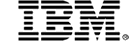

The conference for participants
The SPA Conference brings together software development practitioners from around the world to exchange and develop the latest ideas and skills in software architecture, design and development.SPA2007 provides a unique high-energy learning experience that explores a broad range of subjects from leading-edge technology, through pioneering software development and deployment practices, to innovative techniques for managing software projects and the people that make up the project team.
The SPA Conference, now in its 15th year, is organised by the British Computer Society's Software Practice Advancement specialist group. We have a passion for advancing the art of software development and have put together a programme packed with thought-provoking session which explore emerging practices that software teams can leverage in their project work.
This year's programme
Read about the exciting sessions planned as part of this year's programme to get a more detailed of what to expect from SPA2007.SPA2007 is sponsored by:

|
 |